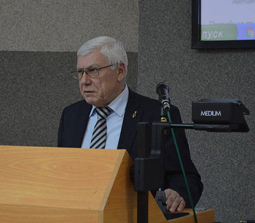

О себе
Доктор политических наук, профессор. Более 30 лет научной и преподавательской деятельности в области политологии и государственного управления.


Биография
Шабров Олег Федорович — доктор политических наук, профессор. Родился в 1946 году. Выпускник факультета физической и квантовой электроники МФТИ (1970).
С 1988 года ведёт научно-педагогическую деятельность в области политологии и политического управления. С 1 сентября 2019 года — профессор кафедры государственной политики Факультета политологии МГУ им. М.В. Ломоносова.
Автор более 200 научных работ, в том числе монографий, учебных пособий и статей в ведущих рецензируемых изданиях. Осуществлял деятельность в сфере политического консалтинга и PR, руководил политическими проектами и избирательными кампаниями.
Учёная степень
- Кандидат наук (1988) — «Повышение роли народного контроля как важного звена социалистического самоуправления в утверждении социальной справедливости»
- Доктор наук (1998) — «Эффективность политического управления: системно-кибернетический подход»
Академические регалии
- Профессор (2001)
- Почётный работник высшего профессионального образования Российской Федерации
- Президент Академии политической науки
- Главный редактор журнала «Социально-политические науки»
- Главный редактор научного альманаха «Моделирование в социально-политической сфере»
- Заместитель председателя Экспертного совета ВАК РФ по политологии
- Член редакционных коллегий 6 научных журналов
- Руководитель Научного комитета по политическому управлению РАПН
Образование и карьера
Окончание МФТИ
Факультет физической и квантовой электроники МФТИ. Дипломная работа «Расчёт модели шаровой молнии» (защита в Институте физических проблем АН СССР).
Аспирантура и становление
Работа в Академии общественных наук при ЦК КПСС. Прохождение аспирантуры, подготовка и защита кандидатской диссертации.
Защита кандидатской диссертации
Тема: «Повышение роли народного контроля как важного звена социалистического самоуправления в утверждении социальной справедливости». Начало научно-педагогической деятельности.
Начало экспертной и консалтинговой деятельности
Участие и руководство избирательными, образовательными и PR-проектами. Работа в Агентствах «Эмиссар», «Миссия-Л».
Руководитель политических проектов
Руководитель дирекции политических проектов агентства «Эмиссар» (1998–2002). Генеральный директор консалтинговой компании «Академ-Групп».
Защита докторской диссертации
Тема: «Эффективность политического управления: системно-кибернетический подход». Присвоена учёная степень доктора наук.
Присвоение звания профессора
Официальное присвоение учёного звания профессор. Заместитель директора политологического центра РАУ.
Заведующий кафедрой РАГС
Назначен заведующим кафедрой политологии и политического управления РАГС при Президенте РФ. Заместитель председателя Экспертного совета ВАК РФ по политологии.
Заведующий кафедрой РАНХиГС
После объединения РАГС и АНХ — заведующий кафедрой политологии и политического управления Института общественных наук РАНХиГС. Руководитель Научного комитета по политическому управлению РАПН.
Переход в МГУ
С 1 сентября 2019 года — профессор кафедры государственной политики Факультета политологии МГУ им. М.В. Ломоносова.
Текущая деятельность
Профессор МГУ, Президент Академии политической науки, главный редактор научных изданий. Активная научная, преподавательская и экспертная деятельность. Член редакционных коллегий 6 научных журналов.
Области научных интересов
Политические системы и управление
Структура, функции и развитие политических систем. Механизмы формирования и реализации политической власти. Системно-кибернетический подход.
Государственная и публичная политика
Разработка, реализация и оценка государственной политики. Механизмы и инструменты эффективного политического управления.
Политические технологии
Политический консалтинг, избирательные кампании, PR-технологии. Практический опыт руководства политическими проектами.
Политическое моделирование
Методы формального и имитационного моделирования политических процессов и систем. Вычислительные методы в политических исследованиях.
Культура и политика
Взаимосвязь культурных факторов и политических процессов. Роль культуры в развитии политической системы и гражданского общества.
Глобальные вызовы
Актуальные глобальные вызовы XXI века и их влияние на политические системы и международные отношения. Стратегическое прогнозирование.